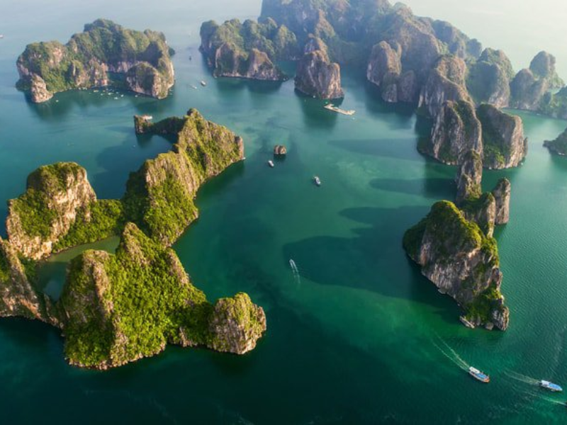

Hình ảnh hùng hồn của các vùng địa lí Việt Nam
Những hình ảnh này minh họa cho kiến thức Địa lí trong lớp: địa hình karst, cao nguyên, hang động, sông nước đồng bằng.

Miền Bắc - Vịnh Hạ Long
Đây là ví dụ tiêu biểu khi học về địa hình karst, biển đảo và giá trị du lịch của vùng Đông Bắc Bắc Bộ.

Miền Trung - Phong Nha - Kẻ Bàng
Khi học Địa lí tự nhiên, học sinh có thể thấy rõ hệ thống hang động, núi đá vôi và tài nguyên du lịch nổi bật của miền Trung.

Tây Nguyên - Mang Đen
Minh họa cho địa hình cao nguyên, rừng và khí hậu mát mẻ của khu vực Tây Nguyên.

Miền Nam - Đồng bằng sông Cửu Long
Hình ảnh chợ nổi thể hiện đặc trưng sông ngòi chằng chịt, giao thông đường thủy và đời sống kinh tế vùng đồng bằng.